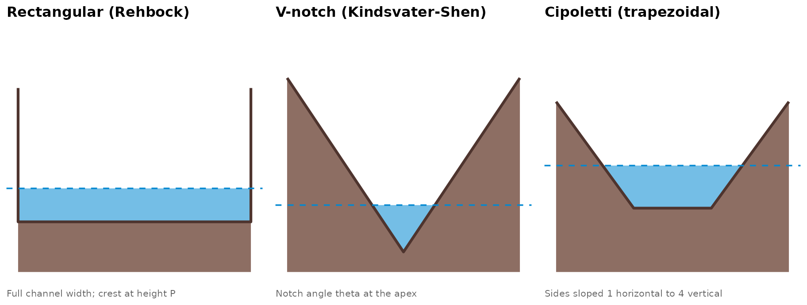
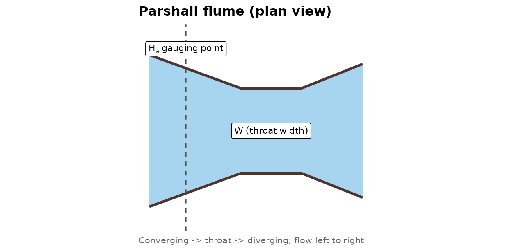
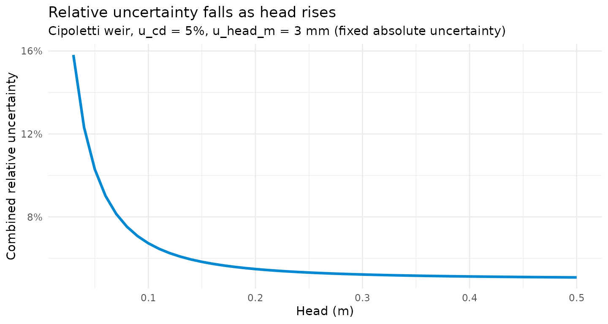

Weir and Flume Equations: Structures, GUM Uncertainty, and Worked Examples
Jonathan Payne, Environment Agency Flood Forecasting
September 2026
Source:vignettes/weir_flume_guide.Rmd
weir_flume_guide.RmdEverything else in this package fits a rating to gaugings:
rate_optimise() estimates
C/a/n by nonlinear least squares,
and every uncertainty figure it produces – bootstrap or asymptotic –
comes from that fit. A weir or flume is a different kind of rating
entirely. Its stage-discharge relationship comes from the structure’s
own geometry and a published discharge coefficient, not from a curve
fitted to measurements at this particular site. There is nothing to fit
and no gaugings required – which also means there is no
rmse_cms or r_squared standing between you and
a wrong transcription of the standard. This vignette exists because that
correctness burden falls entirely on getting the equation right the
first time.
weir_discharge_rectangular(),
weir_discharge_vnotch(),
weir_discharge_cipoletti(), and
flume_discharge_parshall()
(R/weir_equations.R) each take a head (or head series) and
the structure’s geometry, and return a discharge together with a
GUM-style propagated uncertainty. This vignette covers what each
structure looks like, where its equation comes from, and how the
uncertainty is built – read ?weir_discharge_rectangular and
its siblings for the full argument reference.
The four structures
Three of the four are front-elevation views: looking straight at the
plate from downstream, the same way
vignette("n_bounds_guide") draws an idealised channel
cross-section (this reuses that vignette’s own diagram helper – a weir
plate’s profile is geometrically the same kind of shape as a channel
bed). Schematic, not to scale.
rect_bed <- data.table(distance_m = c(-2.5, -2.5, 2.5, 2.5), elevation_m = c(1.3, 0.5, 0.5, 1.3))
p_rect <- weir_diagram(rect_bed, water_level = 0.5 + 0.2, "Rectangular (Rehbock)",
"Full channel width; crest at height P")
vnotch_bed <- data.table(distance_m = c(-1.6, 0, 1.6), elevation_m = c(1.3, 0, 1.3))
p_vnotch <- weir_diagram(vnotch_bed, water_level = 0.35, "V-notch (Kindsvater-Shen)",
"Notch angle theta at the apex", baseline_drop = 0.15)
cip_bed <- data.table(distance_m = c(-1.5, -0.5, 0.5, 1.5), elevation_m = c(1.1, 0.6, 0.6, 1.1))
p_cip <- weir_diagram(cip_bed, water_level = 0.6 + 0.2, "Cipoletti (trapezoidal)",
"Sides sloped 1 horizontal to 4 vertical")
grid.arrange(p_rect, p_vnotch, p_cip, ncol = 3)
A Parshall flume isn’t a plate in the flow at all – it’s a shaped constriction in the channel itself, so it needs a plan view (looking down on the channel) rather than a front elevation:
#> Warning in annotate("label", x = ha_x, y = 2.7, label = "H[a]~gauging~point", :
#> Ignoring unknown parameters: `label.size`
#> Warning in annotate("label", x = 4, y = 0, label = "W~(throat~width)", parse =
#> TRUE, : Ignoring unknown parameters: `label.size`
Rectangular (Rehbock)
A plate spanning the full width of its approach channel – no side contractions – with a sharp horizontal crest at height above the bed. Head is measured above the crest, upstream of the drawdown curve. The Rehbock equation (the form ISO 1438:2017 specifies for this structure) lets the discharge coefficient vary with the ratio of head to weir height:
ISO 1438 restricts this to
;
weir_height_m >= 1 still runs, but warns, since
’s
fit is unvalidated past that point.
weir_discharge_rectangular(
head_m = c(0.1, 0.2, 0.3), width_m = 1.5, weir_height_m = 0.5,
u_cd = 0.02, u_head_m = 0.003
)
#> head_m discharge u_c_rel U_rel discharge_lower discharge_upper
#> <num> <num> <num> <num> <num> <num>
#> 1: 0.1 0.08663338 0.04924429 0.09848858 0.07810098 0.09516578
#> 2: 0.2 0.25161169 0.03010399 0.06020797 0.23646266 0.26676072
#> 3: 0.3 0.47432015 0.02500000 0.05000000 0.45060414 0.49803616
#> coverage_k
#> <num>
#> 1: 2
#> 2: 2
#> 3: 2V-notch (Kindsvater-Shen)
A triangular notch cut into a plate, apex down. Because the flow width at the water surface grows linearly with head rather than staying fixed, a V-notch measures small flows far more precisely than a rectangular weir of similar size – the reason it’s the usual choice for low-flow gauging. ISO, ASTM, and USBR all specify the Kindsvater-Shen form:
and the small head correction
are both fitted polynomials in the notch angle
(degrees); weir_discharge_vnotch() evaluates them exactly
as published (Shen 1981), converting
from the published feet to metres only after evaluating the polynomial,
not before – refitting a unit-converted polynomial from scratch would
risk a transcription error the original doesn’t have. Valid for
between 25 and 100 degrees; outside that, the function errors rather
than extrapolating an unvalidated fit.
weir_discharge_vnotch(
head_m = c(0.05, 0.1, 0.15), notch_angle_deg = 90,
u_cd = 0.02, u_head_m = 0.002
)
#> head_m discharge u_c_rel U_rel discharge_lower discharge_upper
#> <num> <num> <num> <num> <num> <num>
#> 1: 0.05 0.0007972567 0.10027612 0.2005522 0.0006373651 0.0009571484
#> 2: 0.10 0.0044125898 0.05344479 0.1068896 0.0039409299 0.0048842497
#> 3: 0.15 0.0120710027 0.03870555 0.0774111 0.0111365731 0.0130054323
#> coverage_k
#> <num>
#> 1: 2
#> 2: 2
#> 3: 2Cipoletti (trapezoidal)
A trapezoidal notch, sides sloped 1 horizontal to 4 vertical. That slope isn’t arbitrary: it’s chosen so the extra discharge through the widening sides compensates for the end-contraction losses a rectangular weir suffers, letting the whole structure use one fixed coefficient with no weir-height correction:
(SI form, derived here from the USBR Water Measurement
Manual’s published US customary form,
, by direct unit
conversion – shown as a comment in R/weir_equations.R
alongside the SI constant, so the derivation is auditable rather than
just asserted.) That simplicity costs accuracy: USBR describes a
well-maintained Cipoletti installation’s overall accuracy as only around
,
markedly worse than the other three structures here.
weir_discharge_cipoletti(
head_m = c(0.1, 0.2, 0.3), crest_length_m = 1.0,
u_cd = 0.05, u_head_m = 0.003
)
#> head_m discharge u_c_rel U_rel discharge_lower discharge_upper
#> <num> <num> <num> <num> <num> <num>
#> 1: 0.1 0.05878674 0.06726812 0.1345362 0.05087779 0.06669569
#> 2: 0.2 0.16627401 0.05482928 0.1096586 0.14804065 0.18450738
#> 3: 0.3 0.30546487 0.05220153 0.1044031 0.27357340 0.33735634
#> coverage_k
#> <num>
#> 1: 2
#> 2: 2
#> 3: 2Parshall flume
Not a plate at all – a shaped constriction built into the channel bed
and walls, converging to a parallel-sided throat and then diverging back
out. The head is gauged upstream in the converging section
(),
and because the constriction itself (not an obstruction across the whole
flow) creates the head-discharge relationship, a Parshall flume passes
sediment and debris far better than any of the three plate weirs above –
the usual reason to choose one for a station with a mobile bed.
flume_discharge_parshall() implements the general free-flow
equation for standard 1-8 ft (0.3048-2.4384 m) throat widths:
(again SI-derived from the published US customary form,
).
Standard sizes outside that throat-width range use their own
individually tabulated coefficients (USBR ch. 8 §10; ISO 9826), not
reproduced here – throat_width_m outside the range warns
rather than silently applying an unconfirmed extrapolation.
flume_discharge_parshall(
head_m = c(0.15, 0.3, 0.45), throat_width_m = 0.3048,
u_cd = 0.03, u_head_m = 0.005
)
#> head_m discharge u_c_rel U_rel discharge_lower discharge_upper
#> <num> <num> <num> <num> <num> <num>
#> 1: 0.15 0.0385324 0.05893955 0.11787911 0.03399024 0.04307457
#> 2: 0.30 0.1106608 0.03928699 0.07857398 0.10196573 0.11935585
#> 3: 0.45 0.2051184 0.03443814 0.06887629 0.19099062 0.21924621
#> coverage_k
#> <num>
#> 1: 2
#> 2: 2
#> 3: 2A Parshall flume only measures correctly in free (unsubmerged) flow.
Pass the downstream head as hb_head_m and this checks the
standard 0.7 submergence limit for this throat-width range, erroring
rather than applying an uncorrected free-flow equation to submerged
conditions:
flume_discharge_parshall(
head_m = 0.3, throat_width_m = 0.3048, u_cd = 0.03, u_head_m = 0.005,
hb_head_m = 0.25
)
#> Error in `flume_discharge_parshall()`:
#> ! flume_discharge_parshall(): submergence ratio hb_head_m/head_m exceeds the free-flow limit (0.7) at 1 head value(s) -- this is submerged flow, which this free-flow equation does not correct forGUM-style uncertainty
ISO 1438 expresses a weir’s uncertainty analytically rather than
empirically: no gaugings to bootstrap, no residuals to compute an
asymptotic standard error from (rate_optimise()’s two ways
of getting an uncertainty, both covered in
vignette("rating_curves_guide")) – just the discharge
coefficient’s own uncertainty and the head measurement’s uncertainty,
propagated through the equation by GUM (JCGM 100:2008) quadrature. For
any of these structures,
, so the combined relative
standard uncertainty is
where
is that equation’s own head exponent (3/2 for the
rectangular and Cipoletti weirs, 5/2 for the V-notch,
1.522 for the Parshall flume) and
is the head measurement’s absolute standard uncertainty. Every function
here takes u_cd and u_head_m directly –
required arguments, not defaulted, since a fabricated default would look
authoritative without being traceable to anything. The expanded
uncertainty reported alongside it is U = coverage_k * u_c
(coverage_k = 2 by default, the conventional GUM choice for
approximately 95% coverage under a normal approximation).
Two things follow directly from that formula, worth internalising rather than just taking on faith:
heads <- seq(0.03, 0.5, by = 0.01)
out <- weir_discharge_cipoletti(head_m = heads, crest_length_m = 1, u_cd = 0.05, u_head_m = 0.003)
ggplot(out, aes(head_m, u_c_rel)) +
geom_line(colour = water_colour, linewidth = 1.1) +
scale_y_continuous(labels = scales::percent) +
labs(
title = "Relative uncertainty falls as head rises",
subtitle = "Cipoletti weir, u_cd = 5%, u_head_m = 3 mm (fixed absolute uncertainty)",
x = "Head (m)", y = "Combined relative uncertainty"
) +
theme_minimal(base_size = 11)
First, a fixed absolute head-measurement uncertainty (a staff gauge
read to the nearest few millimetres, say) matters far more at a low head
than a high one – u_head_m is fixed in the plot above, but
u_c_rel falls by more than half as head rises from 3 cm to
50 cm. This is the same shape as rate_optimise()’s own
diagnostics degrading toward the low end of a limb
(vignette("rating_curves_guide")’s “Guidance: reading a
fit, in order” section) – a structural weir doesn’t escape that, it just
gets there analytically instead of empirically.
Second, u_cd sets a floor u_c_rel never
falls below, however precisely the head is measured – as
u(H)/H_e -> 0, the combined uncertainty converges on
u_cd itself. A weir’s peak accuracy is bounded by how well
its discharge coefficient is actually known, not by instrumentation.
Choosing u_cd
None of the following are defaults this package applies – they’re starting points from the sources this vignette cites, for a well-built, correctly-installed, well-maintained structure. A rough field installation, dimensional tolerance outside the standard’s own limits, or a debris-affected approach channel all push the real figure higher.
| Structure | Illustrative u_cd
|
Source |
|---|---|---|
| Rectangular (Rehbock) | ~1-2% | ISO 1438’s own worked uncertainty examples |
| V-notch (Kindsvater-Shen) | ~1-2% | Common literature reference point for a well-installed notch |
| Cipoletti | Overall accuracy ~5% (not a pure u_cd) |
USBR Water Measurement Manual, ch. 7 |
| Parshall flume | ~2% (lab) to ~3-5% (field) | Ferreira et al. (2021), Monte Carlo propagation |
The Cipoletti figure is worth flagging specifically: USBR states it
as an overall accuracy, not decomposed into coefficient and
head components the way ISO 1438 structures its own budget – treat it as
context for the scale u_cd needs to be at, not a value to
plug in unexamined.
Where this fits in reach.rate
These four functions are deliberately outside the
FlodeRating/ FlodeRatingTable machinery:
there’s no NLS fit, no gaugings, no provenance to record
beyond the structure’s own geometry. They compose with the rest of the
package only informally for now – a weir-controlled low-flow limb
sitting below a fitted upper limb is a real station configuration, and
graft_rating() already joins two independently-sourced
ratings at the stage where they cross
(vignette("rating_curves_guide")’s “Extending into ungauged
ground” section covers it for a cross-section- or fitting-derived limb).
Wiring a weir equation’s own
C/a/n into that same join –
expressing, say, the rectangular case as a one-row
FlodeRatingTable limb – isn’t built yet; the three
structures with an exact fixed-form power law (V-notch, Cipoletti,
Parshall) would convert directly, while the rectangular case’s
head-dependent
would need the same synthetic-points-then-fit approach
rate_from_cross_section() already uses for Manning’s
equation.
References
Ferreira, H. M. et al. (2021). Uncertainty analysis of discharge measurements using Parshall flumes. ScienceDirect, S2665-9174(21)000714.
ISO 1438:2017. Hydrometry – Open channel flow measurement using thin-plate weirs.
JCGM 100:2008. Evaluation of measurement data – Guide to the expression of uncertainty in measurement (GUM).
Kindsvater, C. E., & Carter, R. W. (1957). Discharge characteristics of rectangular thin-plate weirs. Journal of the Hydraulics Division, ASCE.
Shen, J. (1981). Discharge Characteristics of Triangular-Notch Thin-Plate Weirs (Water-Supply Paper 1617-B). U.S. Geological Survey.
U.S. Bureau of Reclamation (1997). Water Measurement Manual (3rd ed.), ch. 7 (Weirs) and ch. 8 (Flumes).
Where to go next
-
vignette("rating_curves_guide")– “Extending into ungauged ground” forgraft_rating(), the natural next step for a weir-controlled low limb joined to a fitted upper one. -
vignette("n_bounds_guide")– the same front-elevation diagram style applied to idealised channel controls rather than manufactured structures, and where a rating’s exponent comes from physically. -
?weir_discharge_rectangular,?weir_discharge_vnotch,?weir_discharge_cipoletti,?flume_discharge_parshall– full argument reference and citations for each structure.